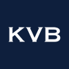
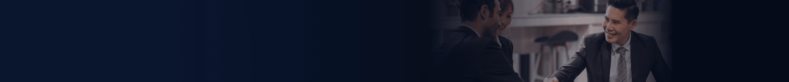

한국인
English
简体中文
Tiếng Việt
ประเทศไทย
繁體中文
한국인
Indonesia
가입하기
로그인
집
제품
외환
필수품
지수
주식
암호화폐
거래
계정 유형
입금 및 출금
레버리지 및 마진
마이너스 잔액 보호
메타트레이더 4
KVB 앱
ActsTrade
카피 트레이딩
통찰력
시장 분석
경제 캘린더
속보
캠페인
IB 프로그램
입금 보너스
스왑프리 프로그램
회사 소개
우리는 누구인가
라이센스
법률 문서
문의하기
우리와 함께하세요
공지사항
가입하기
로그인
집
제품
거래
통찰력
캠페인
회사 소개
가입하기
로그인

스왑프리 프로그램
IB 프로그램
입금 보너스
스왑프리 프로그램
계좌 개설
도움이 필요하다?
여기를 클릭하세요